중등 교사 연수 · 자료실
연수 자료 내려받기
실습에 쓰는 스킬 zip, 플러그인, 홈페이지 기본 틀, 발표 슬라이드를 여기서 받습니다.
설치 파일을 바로 받으려면 아래 목록의 「Claude 데스크톱앱 설치 Windows」를 누르세요.
- 자료 목록을 불러오는 중…
이 페이지 쓰는 법
- 아래 [다음 ›] 버튼이나 키보드 ←/→로 넘깁니다. 휴대폰은 옆으로 밀면 됩니다. 가운데 쪽수를 누르면 목차가 열립니다.
- 프롬프트 상자 오른쪽 위 [복사]를 누르고 Claude 입력창에 붙여넣습니다.
- [대괄호]로 표시된 부분은 내 상황에 맞게 바꿔서 보냅니다.
- 위쪽 프롬프트만 스위치를 켜면 설명은 접고 프롬프트만 모아 볼 수 있습니다.
강사용 · 자료 올리는 방법
- GitHub 저장소의 files 폴더를 엽니다.
- 오른쪽 위 [Add file] → [Upload files]에서 파일을 끌어다 놓고 [Commit changes].
- 1~2분 뒤 이 페이지를 새로 고치면 목록에 자동으로 나타납니다. (파일 하나당 100MB 이하)
- 지우려면 files 폴더에서 파일을 열고 … → Delete file.
파일 이름 앞에 01_, 02_처럼 번호를 붙이면 그 순서대로 보입니다. 번호는 목록에서 감춰집니다.
중등 교사 연수 · 사이트 모음
연수에 필요한 사이트
누르면 새 창으로 열립니다. 로그인할 계정을 미리 확인해 두세요.
Claude
스킬
구글 · Gemini
GitHub
중등 교사 연수
Claude로 만드는
나만의 수학 수업
도구와 홈페이지
스킬부터 학생 응답을 모으는 웹앱, GitHub 배포까지 따라 하며 만듭니다.
연수 개요
오늘의 흐름
하나의 앱, 삼각함수 그래프 그리기를 단계마다 키워 가며 진행합니다.
1부
Claude 이해하기
Anthropic과 Claude · 웹과 데스크톱 앱 · 켜 두면 좋은 설정 · 수업 현장에서 지킬 원칙
1부 · Claude 이해하기
Anthropic과 Claude
Claude는 AI를 안전하고 사람에게 도움이 되는 방향으로 개발하는 것을 목표로 하는 Anthropic이 만들었습니다.
2021년에 설립. 이윤만이 아니라 공익도 함께 고려하는 회사 형태
AI가 따라야 할 원칙을 글로 정리하고, 그 원칙에 맞게 행동하도록 훈련
AI가 강력해질수록 더 엄격한 안전 기준을 적용한다는 약속
1부 · Claude 이해하기
Claude로 할 수 있는 일
| 기능 | 수학 교사의 활용 예 |
|---|---|
| 글쓰기, 요약, 번역 | 가정통신문, 공문, 수업 안내문 초안 |
| 파일 읽기와 만들기 | PDF 시험지 분석, 엑셀 성적 분석, 한글·워드·PPT 자료 만들기 |
| 웹 검색 | 최신 교육과정·정책 자료 찾기 |
| 내 서비스 연결 | 구글 드라이브의 평가 계획서 읽기, 캘린더 일정 확인 |
| 코드 작성 오늘의 중심 | 그래프 탐구 도구, 학생 응답을 모으는 웹앱 |
1부 · Claude 이해하기
웹 버전과 데스크톱 앱
| 구분 | 웹 버전 (claude.ai) | 데스크톱 앱 |
|---|---|---|
| 설치 | 필요 없음 | Windows, macOS에 설치 |
| 파일 다루기 | 파일을 업로드 | 파일을 업로드 또는 내 컴퓨터 폴더를 연결 |
| 빠른 입력 | 없음 | 단축키로 어디서나 열기 (Ctrl+Alt+Space) |
| Claude Code | claude.ai/code (GitHub 저장소 연결) | Code 탭 (내 컴퓨터 폴더에서 작업) |
| 컴퓨터 사용 | 없음 | 설정에서 켜기 (유료, 베타) |
같은 계정이면 대화 기록, 프로젝트, 스킬, 설정이 모두 이어집니다. 3부의 Claude Code부터는 데스크톱 앱이 필요합니다.
1부 · Claude 이해하기
데스크톱 앱의 두 가지 탭
간단한 질문부터 파일 작업, 여러 단계로 진행하는 일까지 한 대화에서 요청하면 Claude가 알아서 방식을 고릅니다.
내 폴더의 파일을 직접 만들고 고치는 Claude Code
- 설치 · claude.com/download → 내 컴퓨터용 다운로드 → 설치 → 로그인
Windows는 Microsoft Store에서도 설치할 수 있습니다. 설치 파일은 자료실 - 빠른 입력 · Mac은 Option 키 두 번, Windows는 설정에서 단축키 지정
- 예전 화면 · 메시지 창에 Chat, Cowork 선택지가 보이면 아직 적용 전 (Pro·Max부터 순차 적용)
1부 · 설정하면 좋은 기능 ①
지침은 모든 대화에 적용됩니다
설정(Settings) → Claude를 위한 지침에 한 번 적어 두면 매번 설명하지 않아도 됩니다.
나는 [중학교(또는 고등학교)] 수학 교사야. - 답은 한국어로 해 줘. - 수식은 교과서 표기법을 따라 줘. - 문항을 만들면 직접 풀어서 정답을 확인해 줘. - 확실하지 않은 내용은 그렇다고 말해 줘.
- 나를 소개 학교급, 담당 과목, 학년
- 답의 형식 한국어, 교과서 표기법
- 확인 습관 문항은 직접 풀어 검산, 모르면 모른다고
프로젝트에 넣은 지침은 그 프로젝트 안에서만 적용됩니다.
1부 · 설정하면 좋은 기능 ②
설정에서 이 여섯 가지를 바꿉니다
| 기능 | 위치 | 왜 | |
|---|---|---|---|
| 응답 완료 알림 | 설정 → 일반 → 알림 | 켜기 | 일을 맡겨 두고 다른 일을 하다가, 끝나면 알림으로 확인합니다 |
| Help improve our AI models | 설정 → 개인정보 보호 → 환경설정 | 끄기 | 학생 자료가 담긴 대화가 AI 모델 학습에 쓰이지 않게 합니다 |
| AI 기반 아티팩트 | 설정 → 기능 → 비주얼 | 켜기 | 아티팩트 안에서 Claude를 불러 쓰는 수업 도구를 만들 수 있습니다 |
| 코드 실행 및 파일 생성 | 설정 → 기능 | 켜기 | 스킬, 아티팩트, 파일 만들기가 이 기능으로 작동합니다 (무료 포함) |
| 채팅 검색 및 참조 | 설정 → 메모리 | 켜기 | 지난 대화를 찾아 이어서 작업합니다 (Pro 이상) |
| 컴퓨터 사용 | 설정 → 시스템 → 컴퓨터 사용 | 켜기 | Claude가 화면을 보고 앱을 직접 조작합니다 (유료, 데스크톱 앱) |
대화 중 켜고 끄기 · 입력창 왼쪽 아래 [+]에서 리서치, 커넥터, 메모리를 고르고, 생각 깊이는 모델 이름 옆에서 정합니다.
메모리를 켜 두었다면 학생 개인정보를 더욱 조심합니다. 기억하지 않았으면 하는 대화는 시크릿 대화로 시작합니다.
1부 · 모델 고르기
모델이 클수록 꼼꼼하지만 토큰을 더 씁니다
| 모델 | 이럴 때 씁니다 | 토큰 비용 (Sonnet = 1) |
|---|---|---|
| Fable 5.1 가장 어려운 과제를 위해 | 어려운 증명 검토, 긴 단원 자료 설계 | 5배 Max 포함, Pro는 사용 크레딧 |
| Opus 5.5 복잡한 작업과 일상 업무를 위해 | 문항 변형, 수업 도구·홈페이지 만들기 | 2배 평소 선택 |
| Sonnet 5.5 간단한 작업에 가장 효율적 | 가정통신문 다듬기, 자료 요약 | 1배 기준 · 오늘 사용 |
| Haiku 5.5 가장 빠른 답변 | 짧은 질문, 용어 확인 | 0.1배 Sonnet의 1/20 |
노력 · 높일수록 오래 생각해 답이 꼼꼼해지고 토큰도 더 씁니다. 평소에는 ‘중간’이면 충분합니다.
토큰 비용은 출력 100만 토큰당 API 가격 기준 (Haiku $0.50, Sonnet $10, Opus $20, Fable $50, 2026년 10월). 구독 요금제에서는 큰 모델일수록 사용 한도가 빨리 줄어듭니다.
2부
따라 하며 익히는 Claude 기본 기능
업무 규칙에서 시작해 연결, 묶음, 내 자료, 화면 속 도구로 넓혀 갑니다
- 스킬업무 규칙
- 커넥터내 서비스 연결
- 플러그인스킬·커넥터 묶음
- 프로젝트과목 자료
- 아티팩트화면 속 수업 도구
2부 · 아티팩트
아티팩트는 대화 옆에 만들어지는 결과물
말로 만들고 고치며, 버전이 남고, 공유 링크로 나눌 수 있습니다. 사이드바 › 아티팩트에서 새로 만들기.
- 문서 수업 안내문, 학습지
- 슬라이드 수업 자료 슬라이드
- 디자인 포스터, 웹 화면 (Claude Design)
- 대시보드 (베타) 성적·설문 현황
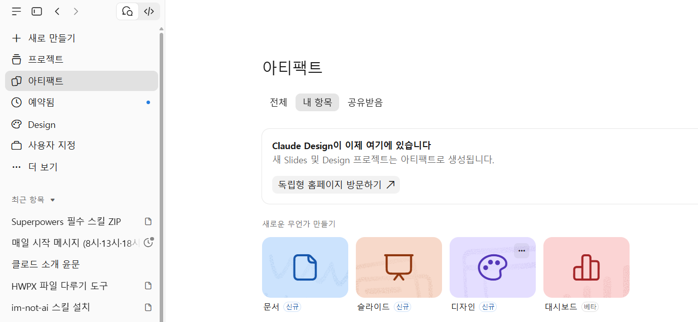
2부 · 아티팩트 따라 하기 ①
아티팩트로 탐구 도구 만들기
삼각함수 그래프 단원용으로 y = a sin b(x − p) + q 의 a, b, p, q를 슬라이더로 바꾸며 그래프 변화를 탐구하는 웹 도구를 만들어 줘. - 처음 상태는 y = sin x (a=1, b=1, p=0, q=0) - 범위: a, q는 −3~3, b는 0.5~4 (모두 0.5 단위), p는 −π~π (π/6 단위) - 기본 그래프 y = sin x를 붉은색 점선으로 함께 표시 - 주기·최댓값·최솟값을 숫자로 표시하고, 그래프에 한 주기 구간과 최댓값·최솟값 선도 표시 - π/2 같은 분수는 모두 세로 분수로 표기 - 디자인: 그래프 계산기 느낌, 수식은 교과서식 기울임 수학 서체, 매개변수별 색 구분 - 모바일에서는 스크롤 없이 수식·그래프·수치·슬라이더가 한 화면에 모두 보이게
cos 그래프로 바꿀 수 있는 버튼도 추가해 줘.
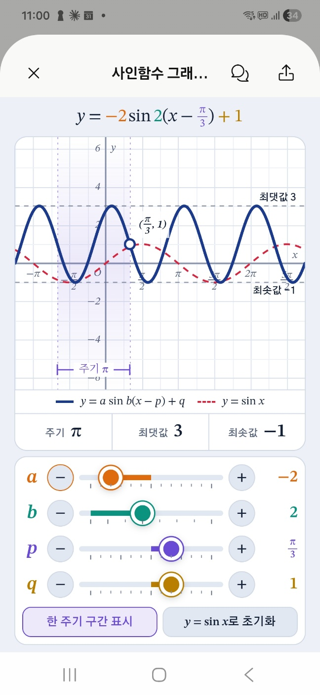
만든 아티팩트는 왼쪽 사이드바 아티팩트 탭에 모두 저장되고, 오른쪽 위 공유 버튼으로 나눌 수 있습니다.
2부 · 스킬
스킬은 업무 매뉴얼입니다
“이 일을 할 때는 이 절차대로 한다”를 Claude에게 가르쳐 둡니다.
한 번 설치하면 모든 대화에서, 관련 요청이 오면 자동으로 사용
양식과 프로그램을 담을 수 있어 한글(hwpx) 파일도 생성
zip 파일 하나라서 다른 선생님께 그대로 전달
추천 사이트 · claudeskills.info/ko에서 다른 사람이 만든 스킬을 찾아 내려받을 수 있습니다 (공식 사이트 아님)
2부 · 스킬 따라 하기 ①
스킬 설치하기
- 왼쪽 사이드바 사용자 지정(Customize)
- 위쪽 탭 스킬(Skills)
- [+] → 스킬 만들기(+ Create skill)
- 스킬 업로드(Upload a skill)
- 나눠 받은 zip 파일 고르기 자료실
- 목록에서 스위치가 켜졌는지 확인
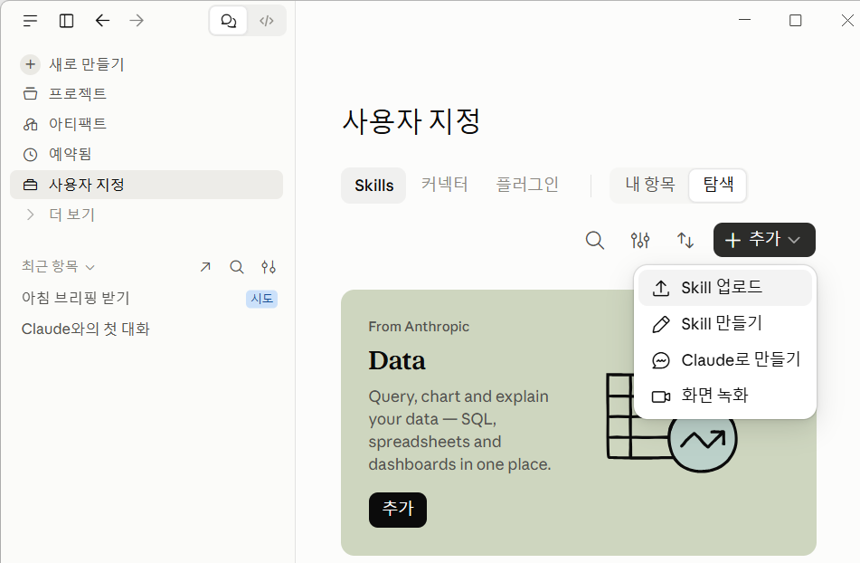
zip 파일은 압축을 풀지 않고 그대로 올립니다. 먼저 설정 › 기능에서 ‘코드 실행 및 파일 생성’이 켜져 있는지 확인합니다.
2부 · 스킬 따라 하기 ②③
AI 티 제거 스킬로 비교해 보기
새 대화에 프롬프트를 붙여넣습니다.
humanize-korean 스킬로 이 글의 AI 티를 없애 줘. > 결론적으로, 이번 공개 수업은 학생 참여를 극대화하는 데 있어 시사하는 바가 크다. 첫째, 협력 학습이 강화되었다. 둘째, 피드백이 활성화되었다. 셋째, 성취도가 15% 향상되었다.
- 번역투·관용구 ‘결론적으로’ 같은 관용구가 빠졌는지
- 기계적 병렬·수치 첫째·둘째는 풀고 15%는 그대로인지
- 이어서 비교 스킬 없이 다시 요청 → 두 결과 비교
2부 · 스킬 따라 하기 ④
HWPX 스킬로 한글 양식 채우기
기안문 양식(.hwpx)을 첨부하고 보냅니다.
hwpx-master-merged 스킬로 첨부한 기안문 양식에 공개 수업 안내를 채워 줘. > 표와 제목 테두리는 그대로 두고 문구만 바꿔 줘. 분량은 1쪽, 개조식으로.
- 할 수 있는 일 양식 채우기·문구 수정·분량 늘리기
- 그대로 지키는 것 표·제목 테두리·쪽 설정
.hwp는 .hwpx로 저장해 올리고, 결과는 한글에서 열어 쪽수를 확인합니다.
2부 · 커넥터
커넥터는 내 서비스와의 연결
구글 드라이브, Gmail, 캘린더에 Claude를 연결합니다. 무료 요금제에서도 쓸 수 있습니다.
드라이브에서 수업 자료 찾아 읽기 · Gmail에서 받은 안내 메일 요약하기 · 캘린더 일정 확인해 계획 세우기
드라이브의 자료를 그때그때 가져옴 · 항상 최신 자료 · 자료가 많거나 자주 바뀔 때 알맞음
2부 · 커넥터 따라 하기 ①②
구글 드라이브 연결하기
- 사용자 지정 → 탭 커넥터(Connectors)
- 커넥터 옆 [+] → Google Drive
- 연결(Connect) → 내 구글 계정 선택
- 권한을 읽어 보고 허용(Allow)
- 같은 방법으로 Google Calendar
- 대화에서는 입력창 [+] → 커넥터로 켜기
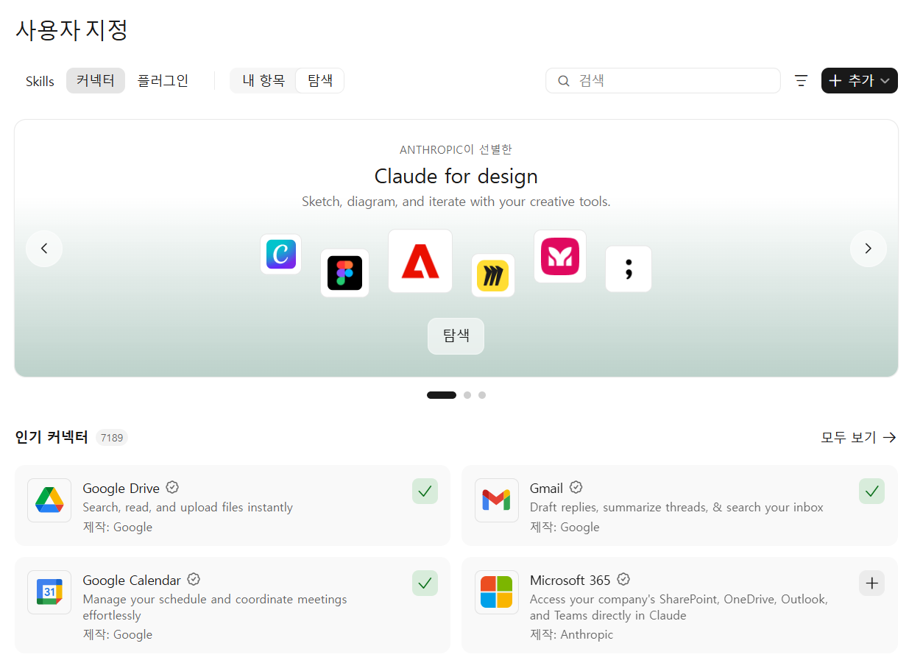
연결을 끊으려면 같은 화면에서 커넥터를 누르고 연결 해제를 누릅니다. 주소창에 claude.ai/customize/connectors 를 입력해도 됩니다.
2부 · 커넥터 따라 하기 ③
캘린더 일정으로 바로 안내문 쓰기
[수학점핑학교 최종보고서 제출일]을 내 캘린더에 저장해 줘.
네이버 캘린더를 쓴다면 · 구글 캘린더로 옮기기 (PC에서)
- 네이버에서 내보내기 네이버 캘린더 환경설정 → 내보내기(백업)에서 기간을 고르고 ics 파일 저장
- 구글 설정 열기 PC에서 구글 캘린더 톱니바퀴 → 설정 → 가져오기 및 내보내기
- 파일 가져오기 저장한 ics 파일 선택 → 일정을 넣을 캘린더 고르기 → 가져오기
- Claude에서 확인 구글 캘린더 커넥터를 켜고 “다음 주 일정 알려 줘”로 확인
가져오기는 한 번만 복사됩니다. 새 일정은 구글 캘린더에 입력하거나 1~3단계를 다시 하세요. 모바일 앱에서는 가져오기가 안 됩니다.
다음 주 일정 알려 줘
2부 · 플러그인 유료 요금제
플러그인은 스킬과 커넥터를 묶은 꾸러미
한 번에 추가하고, 동료에게 한 번에 나눠 줄 수 있습니다. 오늘 써 볼 「학교 업무」 플러그인의 구성입니다.
공문서(기안문) 작성 · 품의서 작성 · 공문 → 메신저 문구
구글 드라이브
/가정통신문 — 입력창에 / 를 입력해 바로 불러 쓰는 정해진 작업
2부 · 프로젝트
프로젝트는 과목별 전용 작업방
지침과 자료를 한 번 넣어 두면 그 안의 모든 대화에 적용됩니다. 무료 계정은 5개까지라 올해 가르치는 과목만 만듭니다.
| 스킬 | 프로젝트 | |
|---|---|---|
| 비유 | 어느 부서에 가도 같은 규칙으로 일하는 행정 베테랑 | 우리 반 자료를 다 알고 그 교실에서만 일하는 담임 |
| 작동 범위 | 모든 대화에서 작동 | 그 프로젝트 안에서만 작동 |
| 담는 것 | 작업 절차와 규칙 | 참고 자료와 배경 정보 |
| 예 | 누구에게나 같은 규칙 (공문서 작성법) | 나만의 자료 (우리 학교 평가 계획) |
| 나누기 | 파일로 나눠 줄 수 있음 | 내 계정 안에서만 사용 |
넣어 둘 자료: 성취기준과 성취수준(가장 중요), 학교 평가 계획서, 교과서 단원 목차, 기출 문항(학생 정보 제외).
2부 · 프로젝트 따라 하기 ①②
프로젝트 만들고 자료 넣기
- 왼쪽 사이드바 프로젝트(Projects)
- + 새 프로젝트 → 이름에 과목명
- 오른쪽 프로젝트 지식의 [+]
- md 파일과 평가 계획서 올리기
- 프로젝트 지침 설정 → 아래 지침 붙여넣기
- 지침 저장
주소창에 claude.ai/projects 를 입력해도 프로젝트 목록이 열립니다.
2부 · 프로젝트 따라 하기 ③④
지침을 넣고, 결과를 비교하기
나는 [대수]를 가르치는 교사야. 이 프로젝트에 넣은 성취기준과 평가 자료를 기준으로 답해 줘. 문항을 만들 때는 - 해당 성취기준 코드를 먼저 밝히고, - 교육과정 범위를 벗어나는 개념은 쓰지 말고, - 직접 풀어서 정답을 확인한 뒤 풀이와 채점 기준을 함께 제시해 줘.
삼각함수 그래프 단원의 성취기준에 해당하는 서술형 문항 1개와 채점 기준을 만들어 줘.
프로젝트 밖 새 대화와 프로젝트 안 새 대화에 각각 보내고 비교합니다. 프로젝트 쪽 결과에 성취기준 코드와 우리 자료 형식의 채점 기준이 들어갔는지 확인합니다.
우리 학교 평가 계획에서 아직 평가하지 않는 성취기준이 있는지 비교해 줘.
작업마다 새 대화를 엽니다. 지침과 자료는 새 대화에도 그대로 적용됩니다.
아티팩트로 할 수 없는 일
학생 응답을 모으려면
어떻게 해야 할까요?
아티팩트는 화면 안에서만 작동합니다. 학생이 그린 그래프를 교사가 모아 볼 수는 없습니다. → 3부
3부
학생 데이터가 쌓이는 웹앱
하나의 앱, 삼각함수 그래프 그리기를 네 단계로 키웁니다
- ① 아티팩트그래프 그리기만 · 저장 안 됨
- ② Apps Script시트·드라이브 저장, AI 피드백 · Claude 대화 + 구글
- ③ 학교 계정누가 냈는지 확인 · Apps Script 배포 설정
- ④ GitHub Pages홈페이지에 공개 · 4부 · GitHub 웹
원칙: 기록은 시트, 파일은 드라이브, 공개는 GitHub Pages, AI 키는 스크립트 속성.
3부 · ① 아티팩트
그래프 그리기 화면 만들기
학생이 손가락으로 삼각함수 그래프를 그리는 화면을 만들어 줘. - 문제: 1번 y = sin x, 2번 y = cos x, 3번 y = tan x - 각 문제 아래에 좌표평면이 그려진 캔버스 (가로축 -2π ~ 2π, π/2 간격 눈금 / 세로축 -2 ~ 2) - 문제마다 '되돌리기', '전체 지우기' 버튼 - 스마트폰 화면에 꽉 차게
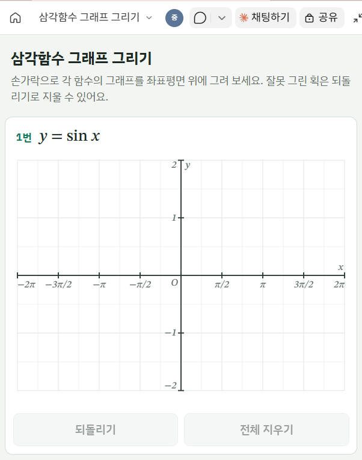
그리기는 되지만 어디에도 저장되지 않습니다. 오른쪽에 나타난 화면에서 직접 그려 보고 확인합니다.
3부 · ② Apps Script
왜 Apps Script부터 시작하나요
| 구분 | Apps Script + 시트 | Firestore |
|---|---|---|
| 결과 확인 | 시트를 열면 바로 보임 | Firebase 콘솔에서 확인 |
| 설정 | 쉬움 | 단계가 많음 |
| 실시간 반영 | 없음 (새로고침) | 있음 |
| 제출 속도 | 1~3초, 동시 제출 시 지연 가능 | 1초 이내, 동시 제출에도 빠름 |
| 이미지 저장 | 구글 드라이브에 바로 | 별도 저장소 필요 (유료) |
| AI API 키 | 스크립트 속성에 안전하게 | Firebase AI Logic으로 무료 |
Apps Script는 구글이 제공하는 무료 실행 공간입니다. 시트·드라이브와 바로 연결되고 웹앱 주소를 만들어 줍니다.
3부 · ② Apps Script 따라 하기 ①
Claude에게 Code.gs와 index.html 만들기
그래프 그리기 화면을 만든 대화에 이어서 보냅니다.
넌 Google Apps Script 전문가야. 방금 만든 그래프 그리기 화면을 Apps Script 웹앱으로 바꿔서 Code.gs와 index.html을 만들어 줘. - 학번·성명 입력칸과 제출 버튼을 추가해 줘 - 제출하면 학번·성명과 그린 그래프 이미지를 '제출' 시트의 한 행에 넣어 줘
그래프 이미지는 드라이브 '삼각함수 그래프 제출' 폴더에 저장해 줘
‘삼각함수 그래프 제출’ 폴더가 없어도 Apps Script가 폴더를 새로 만들어 저장합니다.
3부 · ② Apps Script 따라 하기 ②③④
시트를 만들고 코드 붙여넣기
- 드라이브 [+ 새로 만들기] → 스프레드시트
- 이름: 삼각함수 그래프 그리기
- [확장 프로그램] → [Apps Script]
- Code.gs 비우고 Claude가 만든 코드 붙여넣기
- 파일 [+] → HTML → 이름
index - 비우고 index.html 붙여넣기 → Ctrl + S
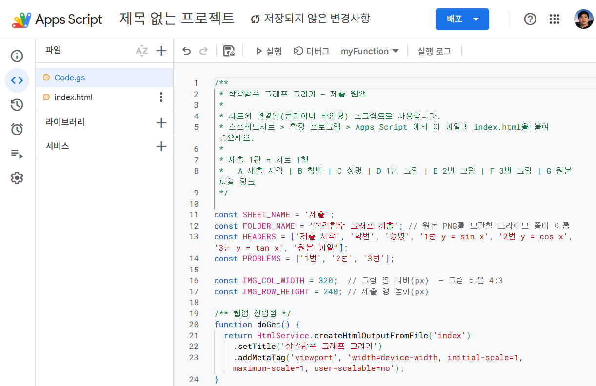
.html은 자동으로 붙으니 입력하지 않습니다. 편집기 왼쪽 위 ‘제목 없는 프로젝트’도 같은 이름으로 바꿔 둡니다.
3부 · ② Apps Script 따라 하기 ⑤
웹앱으로 배포하기
- [배포] → [새 배포]
- 유형 선택 톱니바퀴 → 웹 앱
- 실행: 나 / 액세스: 모든 사용자
- [배포] → 웹 앱 URL 복사
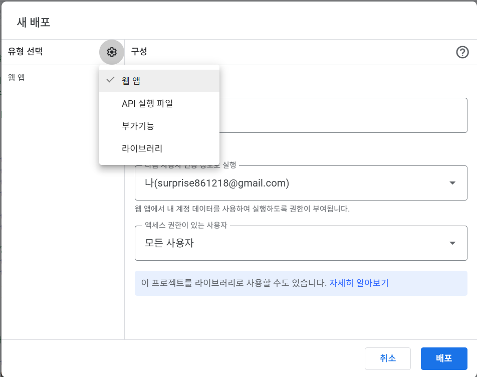
코드를 고친 뒤에는 [배포 관리] → 연필 [수정] → 버전 ‘새 버전’ → [배포]. [새 배포]는 주소가 새로 생깁니다. 주소가 그대로여야 학생들이 계속 같은 링크로 들어옵니다.
3부 · ② Apps Script 따라 하기 ⑤
처음 배포할 때 Google 인증 통과하기
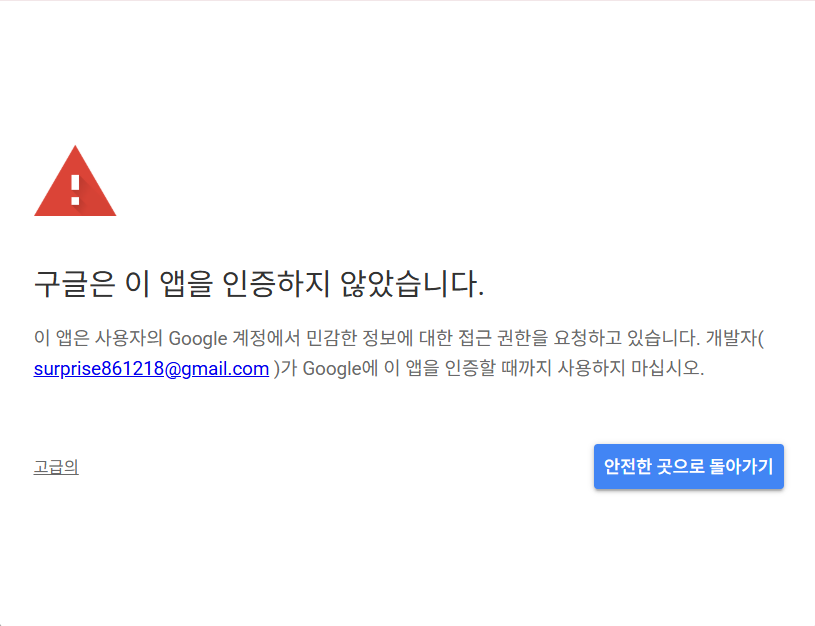
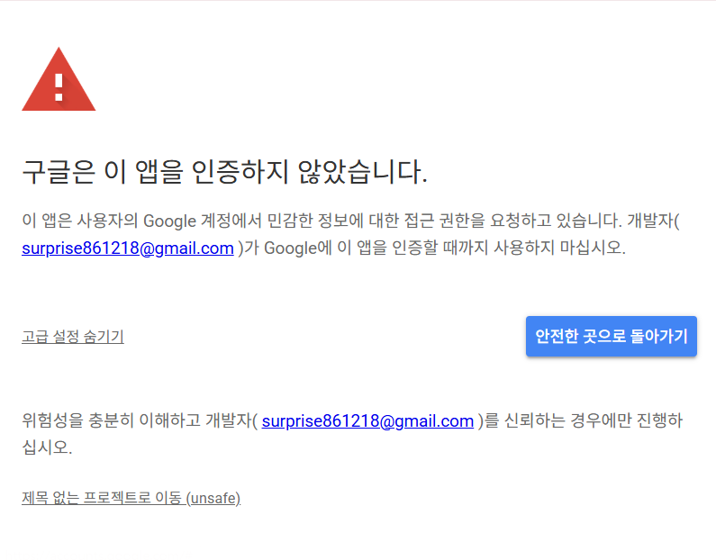
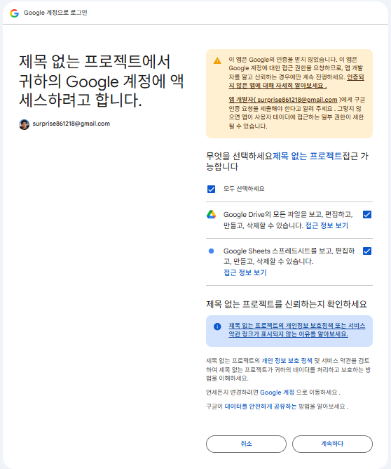
내가 만든 앱이라 Google 검토를 받지 않았다는 뜻입니다. 내 계정으로 만든 스크립트에서만 허용하세요.
3부 · ② Apps Script 따라 하기 ⑥
학생처럼 제출해 보기
스마트폰이나 새 창에서 학번(5자리)과 성명 입력
‘제출’ 시트의 학번·성명과 그래프 이미지
점근선 x = π/2를 넘어가게 끊지 않고 그려 봅니다
제출하면 바로 ‘제출 완료’가 뜹니다. 여기까지가 1단계, 학생 자료 받기의 완성입니다.
3부 · 생각해 보기
분석 코드를 추가하는 프롬프트
내 Apps Script 코드에 학생이 그린 그래프를 sin·cos·tan과 비교해 자동으로 채점하는 기능을 추가해 줘. 결과는 시트 맨 오른쪽 새 열에 적고, 제출 완료 화면에 짧은 피드백으로 보여 줘. 기존 기능은 그대로 둬. [Code.gs 전체 붙여넣기] [index.html 전체 붙여넣기]
- 무엇과 비교할지 sin·cos·tan
- 어디에 기록할지 시트 맨 오른쪽 새 열
- 학생에게 보여 줄 것 제출 완료 화면의 짧은 피드백
- 기존 기능 유지 기존 기능은 그대로 둬
두 파일을 함께 붙여 넣어야 화면과 서버를 같이 고칩니다. 고친 뒤에는 새 버전으로 다시 배포하세요.
3부 · 생각해 보기
새 열에 기록되는 코드 분석 결과
3번 y = tan x
· 주기 π 확인 → 통과
· x절편 0, ±π 근처 → 통과
· 일치율 68% (허용 오차 0.2)
· 점근선 x = ±π/2를 가로질러 그음 (개념 오류)
→ 학생 화면: “x = π/2에서 그래프가 끊어져야 해요.”
- 코드가 판정하는 것
- 최댓값·최솟값
- x절편·주기
- 점근선을 가로질렀는지
- 일치율 → 짧은 피드백
3부 · 생각해 보기
코드는 즉시 수치로 판정하고, 이유는 AI가 설명합니다
최댓값·최솟값이 ±1인지 판정 · x절편·주기(sin·cos 2π, tan π) 확인 · tan 점근선을 가로질러 그었는지 · 평균 차이·일치율 계산 · 정해 둔 문장으로 즉시 피드백
왜 틀렸는지 해석 (sin·cos 혼동 등) · 학생마다 다른 자연스러운 문장 · 그래프 밖 풀이·설명 읽기 · 미리 정하지 않은 새로운 실수 알아차리기
코드는 1초 안에, 매번 같은 기준으로 판정합니다. 해석이 필요한 부분만 Gemini에 맡기면 됩니다.
3부 · 생각해 보기
코드가 정확히 잴 수 있는 것은
코드가 재서 AI에게 알려 준다
점근선을 가로질렀는지까지 정확히 잡지만, 말투는 딱딱합니다
친절하게 설명하지만, 코드의 도움이 있어야 정확해집니다
처음에는 AI에게 그래프 이미지만 보냈더니, tan x가 점근선을 넘어간 그래프에도 “개형을 잘 이해했다”고 답했습니다. 학생이 그린 선의 좌표를 코드가 먼저 재서 알려 주자 오류를 정확히 짚었습니다.
3부 · ② Apps Script 따라 하기 ⑦
AI 붙이기: Gemini API 키 발급
- 주소창에 aistudio.google.com/apikey
- 개인 Gmail 계정으로 로그인
- API 키 만들기(Create API key)
- 프로젝트 고르기 (새로 만들거나 기본값)
- 복사 → 메모장에 붙여넣어 두기
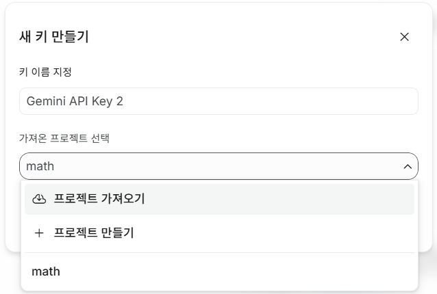
API 키는 비밀번호와 같습니다. 다른 사람에게 보여 주거나 게시판에 올리지 않습니다.
학교(Workspace) 계정은 관리자 정책 때문에 막혀 있는 경우가 많아 개인 Gmail로 합니다. 첫 화면의 Upgrade 안내는 키 발급과 상관없습니다.
3부 · ② Apps Script 따라 하기 ⑧
Claude에게 AI 피드백 기능 추가하기
같은 대화에서 이어서 보냅니다. 바뀐 두 파일을 통째로 다시 붙여넣습니다.
이 앱에 Gemini AI 피드백 기능을 추가하고, 바뀐 Code.gs와 index.html 전체를 다시 줘. - API 키는 프로젝트 설정의 GEMINI_API_KEY에 넣을게. 연결 확인용 testGemini도 만들어 줘 - 모델은 gemini-3.5-flash-lite를 써 줘 - 학생 그림과 코드 분석 결과를 함께 보내서, 왜 틀렸는지 설명하게 해 줘 - 피드백은 시트 맨 오른쪽 새 열과 학생 화면에 보여 줘 - Gemini가 바빠서 답이 없으면 잠시 기다렸다가 다시 보내 줘
3부 · ② Apps Script 따라 하기 ⑨⑩
API 키 넣고 연결 확인하기
- 톱니바퀴 [프로젝트 설정] → 맨 아래
- [스크립트 속성 추가]
- 속성
GEMINI_API_KEY, 값에 키 → 저장 - 편집기에서
testGemini고르고 [실행] - 권한 검토 → 고급 → 이동 → 허용
- 실행 로그에 오류 없이 Gemini 답이 나오면 성공
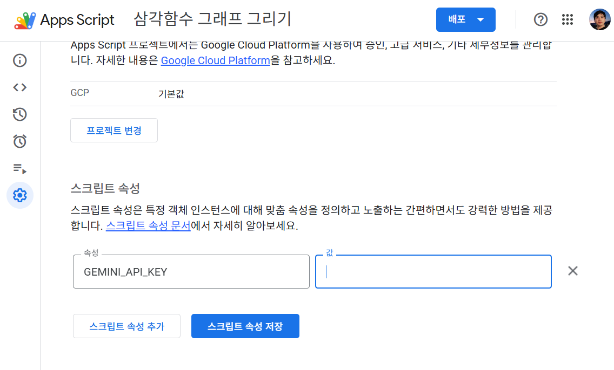
왜 코드에 키를 쓰지 않나요? 키가 코드에 있으면 공유할 때 남이 쓸 수 있습니다. 키는 배포로 저장되지 않아 직접 넣어야 합니다. Gemini 연결은 새 권한이라 5번에서 허용 창이 다시 뜹니다.
3부 · ② Apps Script 따라 하기 ⑪⑫
다시 배포하고 AI 피드백 확인하기
[배포 관리] → 연필 [수정] → 새 버전 → 같은 URL로 다시 제출
완료 화면의 코드·AI 피드백, 시트 맨 오른쪽 새 열
점근선 x = π/2를 넘어가게 끊지 않고 그려 봅니다
제출하면 바로 ‘제출 완료’와 코드 피드백이 뜨고, 이어서 “AI가 그래프를 살펴보고 있어요”가 나온 뒤 문항별 AI 피드백이 나타납니다.
3부 · ② Apps Script · 참고
빠르게 쓰려면 Gemini 3.5 Flash-Lite를 고릅니다
가장 똑똑한 무료 모델 · 분당 5회 · 하루 20회 · 한 반이 쓰기엔 하루 한도 부족
무료로는 쓸 수 없습니다 · 2.5 계열은 새 키로 못 씁니다
응답이 가장 빨라 수업용 추천 · 분당 10~15회 · 하루 500회 · 모델 이름 gemini-3.5-flash-lite
한도는 프로젝트·모델별로 세고, 넘으면 429 오류가 납니다. 30명이 동시에 내면 분당 한도에 걸리니 나눠 제출하게 합니다.
2026년 10월 기준 · 내 한도 확인: aistudio.google.com/rate-limit
3부 · ② Apps Script 따라 하기 ⑬
커넥터로 반 전체 결과 분석하기
- Claude 새 대화 → [+] → 커넥터 → Drive 켜기
- 학생 제출을 받는 시트 이름을 프롬프트에 넣기
- 읽을 열: 코드 분석 · AI 피드백
내 드라이브의 '[시트 이름]' 시트에서 코드 분석 열과 AI 피드백 열을 읽고, 학생들이 자주 보인 오개념을 문항별로 정리해 줘. 다음 수업 도입에서 다룰 확인 질문 3개도 제안해 줘.
커넥터는 시트 전체를 읽습니다. 학번·성명 노출을 피하려면 필요한 열만 새 시트로 복사한 후 사용하는 편이 더 안전합니다.
참고: 시트의 =AI() 함수는 유료 요금제나 개인 계정으로 Workspace 실험 프로그램에 참여한 경우에만 쓸 수 있습니다.
3부 · ③ 학교 계정
화면은 GitHub, 로그인은 Firebase, 저장은 Apps Script
index.html 한 파일을 올림 · 문제 화면·제출 버튼 담당
Google 계정으로 로그인 · 학생 이메일을 화면에 전달
제출 파일을 드라이브에 저장 · 이메일·답·링크를 시트에 기록
Firebase → Apps Script → GitHub 순서로 만듭니다. 설정값과 주소는 Claude에게 붙여 넣으면 파일에 넣어 줍니다.
복사할 값 2개: Firebase 설정값 { … } · Apps Script 웹 앱 주소(…/exec)
3부 · ③ Firebase 따라 하기 ⑭
Firebase: 프로젝트 만들고 Google 로그인 켜기
- 프로젝트 만들고 내 앱 등록
- console.firebase.google.com → [프로젝트 만들기] → 이름 입력 (애널리틱스는 꺼도 됨)
- 프로젝트 개요의 웹 아이콘(</>) → 앱 닉네임 입력 → Hosting은 체크하지 않고 [앱 등록]
- 이어서 나오는 설정값
{ … }묶음 복사 → 다음 장에서 자세히
- Google 로그인 사용 설정
- 왼쪽 [빌드] → [Authentication] → [시작하기] → [로그인 방법] → Google
- 사용 설정 켜기 → 프로젝트 지원 이메일에 내 Gmail 선택 → [저장]
설정값 복사는 다음 장 화면에서 봅니다. apiKey, authDomain, projectId 등이 든 { … } 묶음 하나만 챙기면 됩니다.
Hosting은 쓰지 않습니다. 화면은 GitHub Pages에 올립니다. 승인된 도메인 추가는 GitHub 주소가 생긴 뒤 12단계에서 합니다.
3부 · ③ Firebase 따라 하기 ⑭ 보충
1단계 이어서: Firebase 설정값 복사하기
- [앱 등록] 후 바로 열리는 Firebase SDK 추가 화면
- npm 사용이 선택된 그대로 두고 아래 코드 상자 보기
const firebaseConfig = { … }부분만 복사- 메모장에 붙여 두고 프롬프트 ①에 그대로 사용
- 창을 닫았다면 프로젝트 설정 → 내 앱 → 구성(Config)
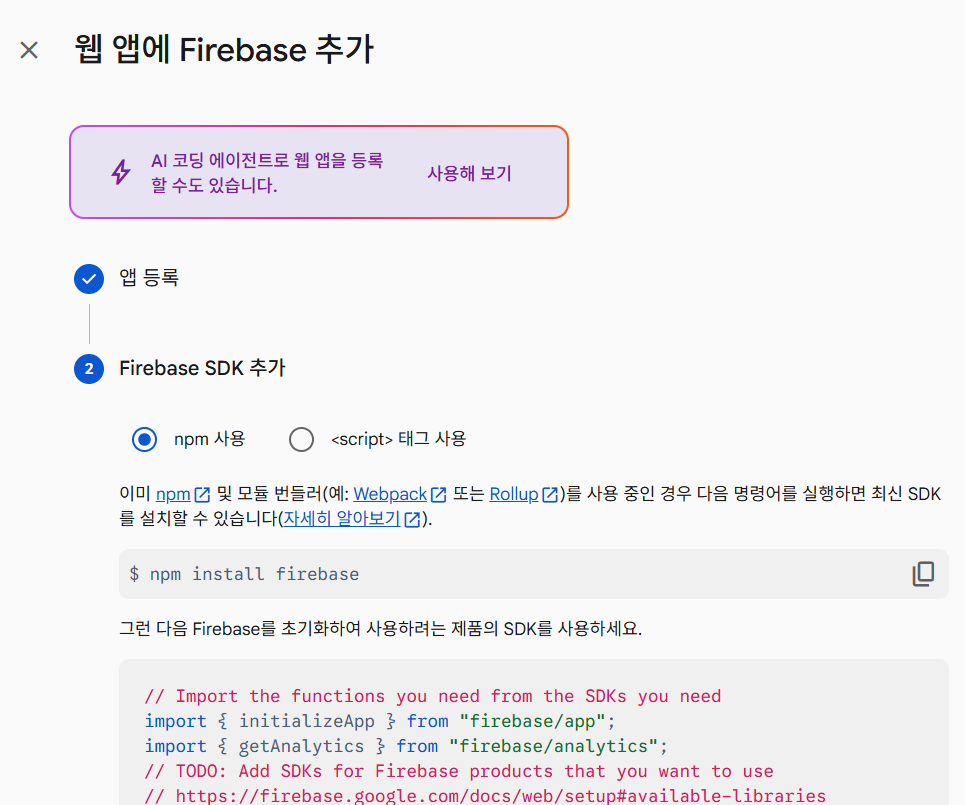
안심하고 붙여 넣기 · Firebase apiKey는 웹페이지에 원래 공개되는 값입니다. 비밀로 지킬 키는 Gemini API 키뿐입니다.
3부 · ③ 학교 계정 따라 하기 ⑮
프롬프트 ①: 바뀐 Code.gs부터 받기
학생 화면은 GitHub에 올리고 로그인은 Firebase로 바꾸려고 해. 먼저 바뀐 Code.gs 전체만 줘.
- 제출은 GitHub 화면에서 보내고, 지금 Apps Script가 받아서 저장하게 해 줘
- 로그인은 Firebase(Google 계정)로 확인해 줘
- 로그인 이메일과 학생이 입력한 학번·이름을 시트에 적어 줘
- 그래프 이미지는 따로 저장하지 말고 시트 칸에 바로 넣어 줘
- 코드 분석, Gemini 피드백, API 키 보관 방식은 지금 그대로 둬
- 아래 Firebase 설정값의 projectId를 Code.gs에 넣어 줘
[여기에 1단계에서 복사한 설정값 { … } 붙여 넣기]
앞에서 Gemini를 붙이던 대화에 이어서 보냅니다. 대화가 끊겼다면 지금 Code.gs와 index.html을 함께 붙여 넣으세요. 프롬프트 ②도 같은 대화에서 보냅니다.
3부 · ③ Apps Script 따라 하기 ⑯
Apps Script: 새 Code.gs로 바꾸고 주소 받기
- Code.gs 바꿔 넣기
- Gemini를 붙인 기록용 시트 → [확장 프로그램] → [Apps Script] → Code.gs
- 전체 지우기(Ctrl + A) → 프롬프트 ①에서 받은 Code.gs 붙여 넣기 → Ctrl + S
- 한 번 실행하고 로그인 키 넣기
- 편집기 위 [실행] → 권한 창이 뜨면 내 계정 → [고급] → [허용]
- [프로젝트 설정] → [스크립트 속성]에
FIREBASE_API_KEY추가 (설정값의 apiKey 값) - Claude가 다른 속성 이름을 안내했다면 그 이름으로 넣기 (Gemini 키는 그대로)
- 새 버전으로 배포하고 주소 복사
- [배포] → [배포 관리] → 연필 아이콘 → 버전: 새 버전 → [배포]
- 액세스: 모든 사용자 (반드시. GitHub 화면에서 보내려면 이 설정이어야 합니다)
…/exec로 끝나는 웹 앱 주소를 복사해 두기 → 프롬프트 ②에 붙입니다
3부 · ③ 학교 계정 따라 하기 ⑰
프롬프트 ②: 주소까지 들어간 index.html 받기
Code.gs 배포했어. 이제 GitHub에 올릴 index.html 전체를 줘. - 위에서 준 Firebase 설정값과 아래 웹 앱 주소를 코드에 넣어 줘 - 처음 열면 [Google로 로그인] 버튼만 보이고, 로그인하면 문제 화면이 나오게 해 줘 - 로그인하면 학번과 이름을 먼저 입력하게 해 줘 (다음에 열면 채워 두기) - 로그인한 이메일과 로그아웃 버튼은 화면 위에 보여 줘 - 제출할 때 로그인 정보와 학번·이름을 함께 보내 줘 - 지금 화면 디자인과 코드 분석·AI 피드백 기능은 그대로 둬 [여기에 5단계에서 복사한 …/exec 주소 붙여 넣기]
프롬프트 ①과 같은 대화에서 보냅니다. 받은 index.html은 파일로 내려받아 두세요. 다음 단계에서 GitHub에 올립니다.
3부 · ④ GitHub
GitHub은 버전 기록이 남는 공유 드라이브
웹에서 직접 올리거나, Claude에게 올려 달라고 합니다. 올릴 때마다 저장 지점이 남아 실수해도 되돌릴 수 있습니다.
파일과 기록이 담긴 폴더 · 비유: 과목별 자료 폴더
지금 상태를 저장 지점으로 · 비유: 메모 달아 버전 저장
커밋을 GitHub에 올리기 · 웹에서는 Upload files
GitHub 최신본을 받아오기 · 웹에서는 파일 내려받기
Claude에 GitHub 커넥터를 연결하면 챗에서 바로 올릴 수 있습니다. 챗에서 “고친 내용 커밋하고 푸시해 줘”라고 하면 됩니다. 연결 방법은 따라 하기 ⑲에 있습니다.
3부 · ④ GitHub · 기본 용어
GitHub 용어는 이 네 가지만 알면 됩니다
| 용어 | 뜻 | 쉽게 말하면 |
|---|---|---|
| 저장소Repository | 홈페이지 파일과 바뀐 기록을 모두 담는 폴더 | 과목별 자료 폴더앱 하나에 저장소 하나 |
| 커밋Commit | 바뀐 내용을 설명 한 줄과 함께 저장 지점으로 남기기 | 날짜 붙은 저장본이 시점으로 되돌릴 수 있음 |
| 푸시Push | 만든 커밋을 GitHub 저장소로 올려 보내기 | 제출함에 넣기올라가야 홈페이지에 반영 |
| 브랜치 mainBranch | 커밋이 이어지는 작업 줄기, 오늘은 main 하나만 | 원본 줄기Pages는 main을 보여 줌 |
한 번에 · 웹의 Upload files나 Claude 커넥터로 올리면 커밋과 푸시가 한 번에 일어납니다.
GitHub Pages는 저장소 main 브랜치의 파일을 웹 주소로 보여 주는 기능입니다. 주소 규칙은 다음 장에서 봅니다.
3부 · ④ GitHub Pages
GitHub Pages 주소는 사용자 이름과 저장소 이름으로 정해집니다
Public 저장소는 누구나 봅니다. API 키·학생 정보는 금지, Firebase 설정값·/exec 주소는 괜찮습니다.
3부 · ④ GitHub 따라 하기 ⑱
GitHub: 계정 만들고 사용자 이름 정하기
- GitHub 계정 만들기
- github.com → 오른쪽 위 [Sign up]
- 이메일 → 비밀번호 → 사용자 이름(Username) 입력 → [Continue]
- 메일로 온 숫자 코드 입력 → 가입 완료 (무료 플랜으로 충분합니다)
- 학교 Gmail로 가입해 두면 Firebase·Apps Script 계정과 한곳에서 관리됩니다
- 사용자 이름 확인하기
- 가입 후 오른쪽 위 프로필 사진 → 굵게 보이는 이름이 사용자 이름
- 이 이름이 그대로 사용자이름.github.io 주소가 됩니다
- 메모장에 적어 두기 → 12단계 승인된 도메인에 넣습니다
사용자 이름은 영문 소문자·숫자·하이픈으로 짧게 정합니다 (예: kim-math). 나중에 바꾸면 주소도 바뀝니다. 학생과 학부모가 보는 주소이니 실명·생년월일은 피합니다. 이미 계정이 있으면 7단계만 확인하세요.
3부 · ④ GitHub 따라 하기 ⑲
GitHub: Claude에 커넥터로 연결하기
- 커넥터에서 GitHub 추가하기
- Claude → 사용자 지정 → 커넥터(Connectors)
- 커넥터 옆 [+] → GitHub → 연결(Connect)
- 2부에서 구글 드라이브를 연결한 것과 같은 순서입니다
- GitHub 로그인하고 권한 허용하기
- GitHub에 로그인 → 권한을 읽어 보고 허용(Authorize)
- 저장소 범위를 물으면 All repositories 선택
- 저장소는 다음 장 11단계에서 만듭니다
- 대화에서 켜고 확인하기
- 대화 입력창 [+] → 커넥터 → GitHub 켜기
- 아래 문장을 보내 내 사용자 이름이 답으로 나오면 성공입니다
내 GitHub 계정 이름 알려 줘
3부 · ④ GitHub 따라 하기 ⑳
GitHub: index.html 올리고 로그인 허용하기
- 저장소 만들고 웹사이트로 공개하기
- github.com → [New repository] → 이름 입력 → Public → [Create repository]
- [uploading an existing file] → 받은 index.html 끌어다 놓기 → [Commit changes]
- [Settings] → [Pages] → Branch: main / (root) → [Save]
- 1~2분 뒤
https://내아이디.github.io/저장소이름/이 학생에게 나눌 주소
- Firebase에 GitHub 주소 허용하기
- Firebase → [Authentication] → [설정] → [승인된 도메인] → [도메인 추가]
내아이디.github.io만 입력 (https://와 저장소 이름은 빼고)- 이 단계를 빠뜨리면 로그인 창이 열렸다가 바로 닫힙니다
고칠 때: 화면은 Claude에게 받은 새 index.html로 바꿔 올리고, Code.gs를 고쳤다면 [배포 관리]에서 새 버전으로 배포합니다. 4부에서 같은 방법으로 수업 홈페이지도 올립니다.
3부 · ④ 확인하기 따라 하기 ㉑
학생 계정으로 제출해 보고 확인하기
- 시크릿 창에서 학생처럼 제출
- 시크릿 창에서 GitHub 주소 열기 → Google로 로그인 → 학번·이름 입력
- 그래프 3개 그리고 [제출] → 시트에 이메일·학번·이름이 한 줄, 화면에 채점·AI 피드백이 나오면 성공
안 될 때 확인할 곳
| 증상 | 확인할 곳 |
|---|---|
| 로그인 창이 바로 닫힘 | 12단계 승인된 도메인에 github.io 주소가 있는지 |
| 시트에 학번·이름이 안 남음 | 프롬프트 ①·②를 같은 대화에서 보냈는지 |
| ‘서버에서 문제가 생겼습니다’ | 스크립트 속성 FIREBASE_API_KEY 값 |
| 그 밖의 제출 오류 | 5단계 액세스가 모든 사용자인지, 새 버전으로 배포했는지 |
| AI 피드백만 안 나옴 | 스크립트 속성의 GEMINI_API_KEY 값 |
| 주소가 안 열림(404) | Pages를 켠 뒤 1~2분 기다렸다가 새로 고침 |
학생에게는 GitHub 주소 하나만 나눕니다. Apps Script 주소와 시트는 공유하지 않습니다.
Firebase 설정값은 공개돼도 됩니다. 허용한 주소에서만 로그인이 열리기 때문입니다.
3부 정리
3부에서 기억할 다섯 가지
- 코드가 재고 AI가 설명정확한 측정은 코드, 친절한 피드백은 Gemini
- 기록은 시트 한 줄에이메일·학번·이름과 그래프 이미지를 함께 기록
- 비밀 키는 스크립트 속성에Gemini·Firebase 키를 코드에 넣지 않아야 공유해도 안전
- 화면은 GitHub, 로그인은 Firebase학생은 Google로 로그인하고 학번·이름을 직접 입력
- 고친 뒤엔 새 버전으로 배포Code.gs는 새 버전 배포, index.html은 GitHub에 다시 올리기
4부
GitHub로 만드는 수업 홈페이지
배부한 기본 틀을 GitHub에 올리고, Claude로 내 수업에 맞게 디자인한 뒤 커넥터로 다시 올립니다
4부 · 흐름
처음은 내가 올리고, 그다음부터는 Claude가 올립니다
Upload files로 올리면 첫 커밋이 생깁니다
내가 · GitHub 웹저장소가 홈페이지 주소를 갖습니다
내가 · GitHub 웹색, 글꼴, 소개 문구를 미리 보며 고칩니다
Claude가 · 대화나는 커밋 기록과 바뀐 주소만 확인합니다
Claude가 · 커넥터커넥터 · 3부 따라 하기 ⑲에서 연결한 GitHub 커넥터를 그대로 씁니다. 다시 연결할 필요가 없습니다.
4부 · GitHub 따라 하기 ①
홈페이지용 새 저장소 만들기
- github.com 오른쪽 위 [+] → New repository
- 이름
math-lab, Public · 3부 앱 저장소와 따로 - Create repository 누르기
- 빈 저장소 화면이 나오면 다음 장으로
4부 · GitHub 따라 하기 ②
기본 틀 파일 올리기: 첫 커밋
- 배부한 홈페이지-기본틀.zip 압축 풀기 자료실
- 저장소 화면 Add file → Upload files
- 폴더 안의 파일과 폴더를 모두 끌어다 놓기
- 설명 칸에 첫 홈페이지 올리기 입력
- Commit changes 누르기 → 첫 커밋 완료
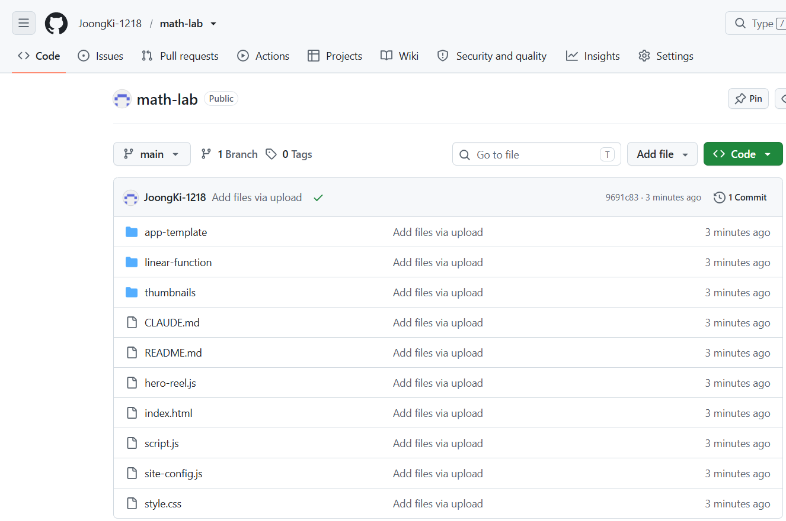
폴더째가 아니라 내용물을 올립니다. 첫 화면에 index.html이 보이면 성공입니다.
4부 · GitHub Pages 따라 하기 ③
GitHub Pages 켜고 스마트폰으로 접속
- 저장소 Settings → 왼쪽 Pages
- Source Deploy from a branch
- Branch main, / (root) → Save
- 1~2분 뒤 Your site is live at 확인
- 스마트폰으로
아이디.github.io/math-lab/열기 - 예시 카드 ‘일차함수 그래프 탐구’가 열리는지 확인
4부 · 디자인 따라 하기 ④
Claude로 내 수업 홈페이지 디자인하기
GitHub 커넥터로 [내 아이디]/math-lab 저장소의 홈페이지 파일을 읽고 아래처럼 바꿔 줘. - 이름: 사이트 제목을 [김○○ 선생님의 수학 교실]로 - 디자인: [차분한 초록] 색, 제목은 손글씨 느낌 글꼴 - 모션: 첫 화면 제목은 천천히 나타나게 - 모션: 카드는 마우스를 올리면 살짝 떠오르게 - 카드 구조와 class 이름은 그대로 - 올리기 전에 아티팩트로 먼저 보여 줘
마음에 들 때까지 아티팩트에서 고칩니다
“제목을 더 크게”처럼 짧게 말할수록 정확합니다
4부 · 커넥터 따라 하기 ⑤
Claude에게 커밋과 푸시 맡기기
방금 확정한 디자인을 GitHub 커넥터로 math-lab 저장소의 main에 올려 줘. - 바뀐 파일만 올리고 나머지는 건드리지 마 - 올리기 전에 바꿀 파일 목록부터 보여 줘 - 커밋 메시지: "홈페이지 디자인 변경: 초록 테마" - 다 올리면 커밋 주소를 알려 줘
GitHub에 쓰기 전에 Claude가 허용을 묻습니다
되돌릴 때 이 설명으로 시점을 찾습니다
4부 · 확인하기 따라 하기 ⑥
QR로 나눠 주고, 막히면 여기부터
- QR로 학생에게 나누기
- 카드 오른쪽 QR 버튼 → 그 앱 주소의 QR / 상단 [학생 접속 QR] → 홈페이지 주소의 QR
- QR 창의 [주소 복사]로 학급 채팅방에 링크를 붙여 넣을 수도 있습니다
안 될 때 확인할 곳
| 증상 | 확인할 곳 |
|---|---|
| 주소가 …/math-lab/홈페이지-기본틀/ 처럼 깊음 | 폴더째 올림. 내용물만 다시 올리기 |
| 화면이 하얗거나 카드가 0개 | site-config.js의 쉼표·따옴표 (F12 → Console의 줄 번호) |
| 카드는 있는데 열면 404 | url 철자와 끝의 / 확인 |
| 과목 버튼으로 안 걸러짐 | subject를 과목 버튼 이름과 똑같이 (Ⅰ·Ⅱ는 로마숫자 기호) |
| 고쳤는데 그대로 | 1~2분 기다렸다가 Ctrl + Shift + R |
| 썸네일이 안 나옴 | thumbnails/폴더이름.png 철자 확인 |
학생에게는 홈페이지 주소 하나만 나누면 됩니다. 앱이 늘어나도 주소는 그대로이고, 카드만 늘어납니다.
마무리
오늘의 다섯 가지 원칙
- 학생 개인정보는 넣지 않는다
- AI 결과는 직접 확인한다
- 코드가 정확히 잴 수 있는 것은 코드가 재서 AI에게 알려 준다
- 기록은 시트, 파일은 드라이브, 공개는 GitHub Pages
- 커밋은 자주, 공개 전엔 점검
마무리
학교에서 쓰기 전에, 막혔을 때
- 꼭 필요한 정보만 받기
- AI에는 이름·학번 보내지 않기
- 드라이브 이미지는 전체 공개 금지
- 웹 앱 액세스 권한 확인하기
- 학기가 끝나면 시트·이미지·데이터 삭제
- 학교 정보 담당자와 지침 확인
- 빨간 메시지를 그대로 복사해 Claude에게
- Apps Script 왼쪽 [실행] 기록
- AI 피드백 시트 J열의 원인
- 웹앱 F12 → Console
- GitHub Settings › Pages 안내 문구
이런 오류가 나요. 원인과 해결 방법을 쉽게 알려 줘. [오류 메시지 붙여넣기]
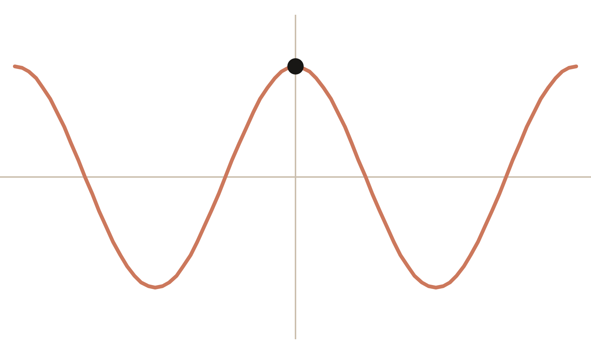
마무리
감사합니다
질문과 나눔